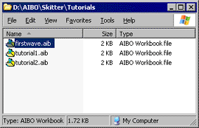
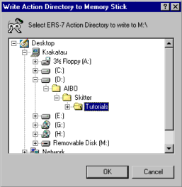
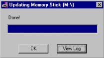

|
|
| Skitter Tutorial - Adding
Skits to AiboMind! |
Contents of this website are freeware and/or copyrighted material, and may not be sold
under any circumstances.
Email: dogsbody@dogsbodynet.com
Home:
https://dogsbodynet.com
|
Adding Skits to AiboMind!
The first tutorial introduced
AIBO motion files (making AIBO move). The second described using the LED & Sound
editors. The third tutorial shows
using YART to perform skits.
This tutorial is for ERS-7 owners only, and demonstrates
using the Skitter Aibo-Mind Manager (SAMM for short). SAMM
supports all versions of AiboMind (1, 2 & 3).
You've created that cool dance for the ERS-7, and the
preview looks great! Now let's make AIBO bust a move!
Our goals are:
Let's get started!
|
| 1.0
Preparing a Dance Directory |
|
An "action directory" (or dance
directory) is a folder on your PC where you collect all the dance skits
you want installed on AiboMind.
There is nothing special about this folder, other than it contain the
workbooks (*.aib) for your dance skits. If using action files
(*.act) instead, there will be folders for the motion, sound, LED files
also.
Older versions of SAMM required a #template file -- no longer.
|
 |
|
1.1
Copying & Renaming skits
1.1.1 Workbooks
Copying or renaming AIBO Workbooks is easy. Just use
Windows Explorer.
1.1.2 Action Files
Copying & renaming action files is harder. You must copy the
action file,
motion, led & sound files. The easiest way is using
Skitter.
Open the target performance in Skitter, and use the File Menu,
"Save-As"
command. Select a new destination action directory, and
Skitter saves copies of all files associated with the performance. |
 |
|
(1)
|
Insert
your AiboMind memstick into your reader. If
you haven't already done so, backup the memstick by copying everything
into a folder on your PC.
|
|
|
|
(2)
|
If not running, start Skitter.
Close any open skits.
Click on the toolbar "Write"
button, and Skitter prompts for the AIBO platform being
used.
This must match your AIBO, so click "ERS-7" (or Cancel to quit);
|
 |
|
|
(3)
|
Now select the "action directory"
on your PC, where you've collected your dance skits.
The example (see right) shows selecting the Skitter tutorial folder.
|
 |
|
|
|
| 3.0
Using New Dances in SAMM |
(1)
|
Once Skitter verifies your AiboMind memory
stick is present, it starts SAMM for you.
SAMM is designed for simple dance customization. You
just select dances, and use the mouse to click-n-drag them into empty
dance slots.
|
 |
|
|
(3)
|
Click-n-drag skits into the "Dance
Slots" boxes (as shown).
Use care when assigning dances. For example, a
sitting dance should not be placed in the sleep or stand position.
When you've finished arranging, click the "Update Memstick"
button.
If you later want to undo the changes, click the "Restore Memstick"
button (available only after you've written changes to the memstick at
least once).
|
|
|
|
| (4) |
 SAMM compiles the dance
directory, and updates your AiboMind memory stick. SAMM compiles the dance
directory, and updates your AiboMind memory stick.
The files updated on AiboMind are large, so this might take
several seconds.
For AiboMind 3 the files are huge, and it will take longer.
|
|
|
(5)
|
Once SAMM displays "Done!" the
memstick is ready, or an error message if something went wrong.
If an error occurred, click on the "View Log"
button to see what happened.
|
|
|
| (6) |
Insert your AiboMind memory
stick into AIBO & turn him/her on. After booting, make
AIBO move into one of the positions you customized (ie: sitting).
Try saying "Let's Dance". AIBO
should hopefully respond with a custom dance! You might need to
repeat the request a few times, since AiboMind combines custom &
built-in dances.
You can now create custom dances, and have AIBO perform them!
Congratulations!
Got a question? Ask Dogsbody! |
|
|
Legalese: These programs are provided AS IS without any warranty, expressed or implied.
This includes without limitation the fitfulness for a particular purpose or
application. People using the software bear all risk
as to its quality and performance. The user of the software
is responsible for any damages whether direct, indirect, special,
incidental or consequential arising from a failure of these programs to operate in
any manner desired. Etc, etc...
"AIBO" is a registered trademark of Sony Corporation.
"AIBO Master Studio", "R-Code", and "Memory Stick" are trademarks of Sony Corporation.
|
|